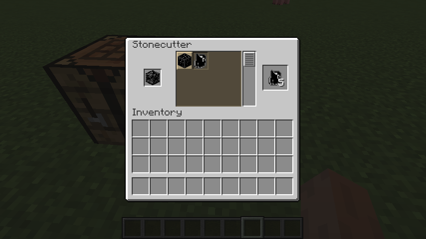
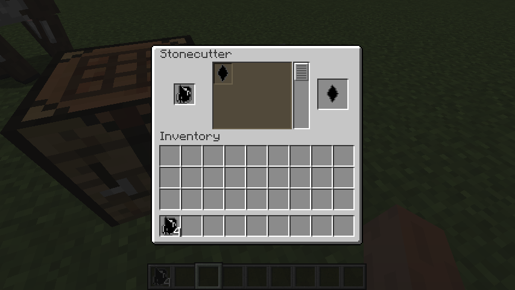
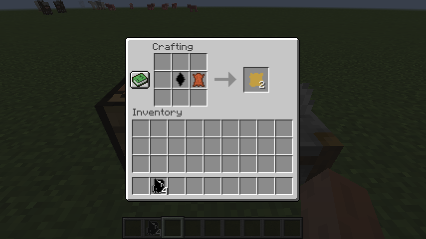
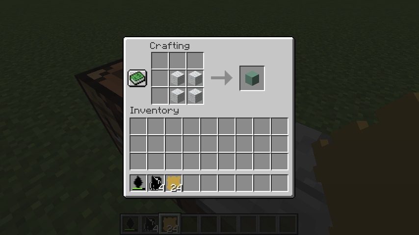
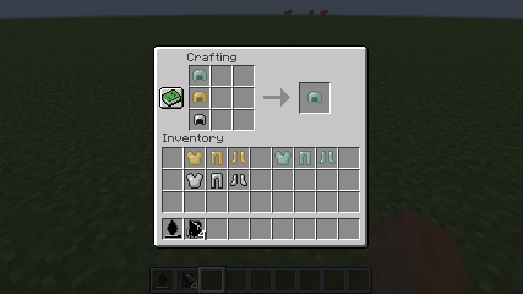
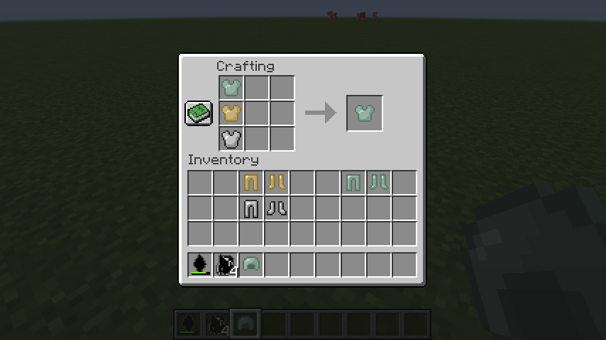
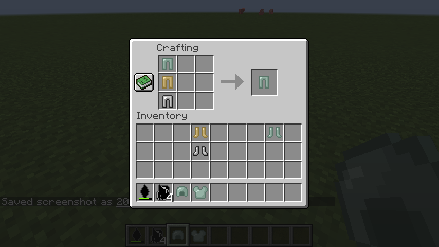
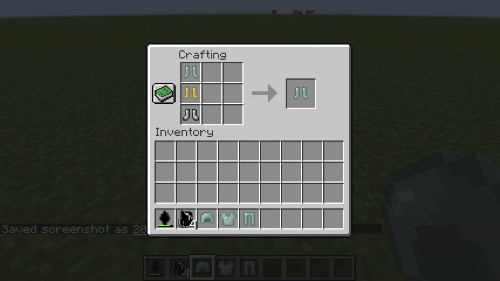
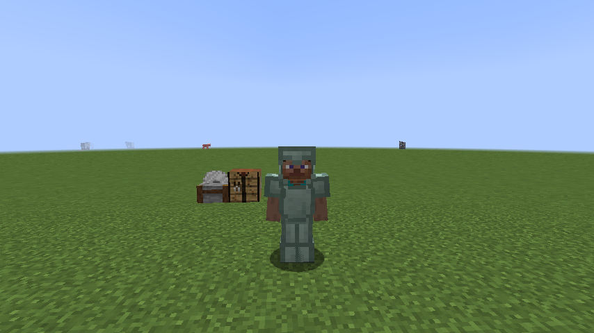

実は、このmodではダイヤがなくても防御力最強になることができます。
(めっちゃダイヤ使うので...)
手順を解説していきます。
1.道具を作る。
1-1.Hard Stone Mini Knife
まず、ストーンカッターでHardStoneを砕きます。

そして、出来上がったHard Stone Piecesをストーンカッターで整形します。

すると、Hard Stone Mini Knife ができます。
2.中間素材を作る。
2-1.革の生地(Leather Fabric)
1-1で作ったミニナイフで、牛の革を加工すると、Lether Fabricができます。
ちなみに、ミニナイフには耐久値があるので注意してください。
これを、24枚(牛の革12枚分)クラフトします。

2-2 衝撃吸収材(Shock Absorber)
羊毛を4つ固めるとShock Absorberができます。
これも、24個(羊毛96個分)クラフトします。
これが一番の難関ですが、頑張ってください!

3 各種防具を作る。
これまで作った中間素材の防具一式と、鉄防具一式を作ります。
クラフトの仕方は、普通の防具と同じなので、画像は省きます。
4 組み合わせる。
3つの防具を組み合わせます。並べ方は関係ないです。




これでダイヤと同じ防御力の防具ができました!
